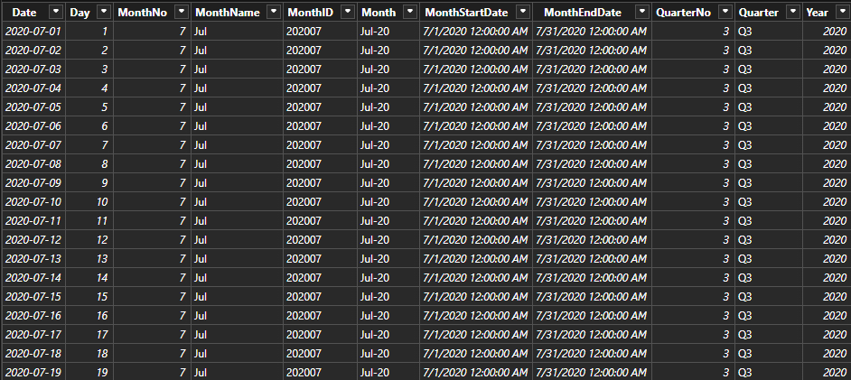
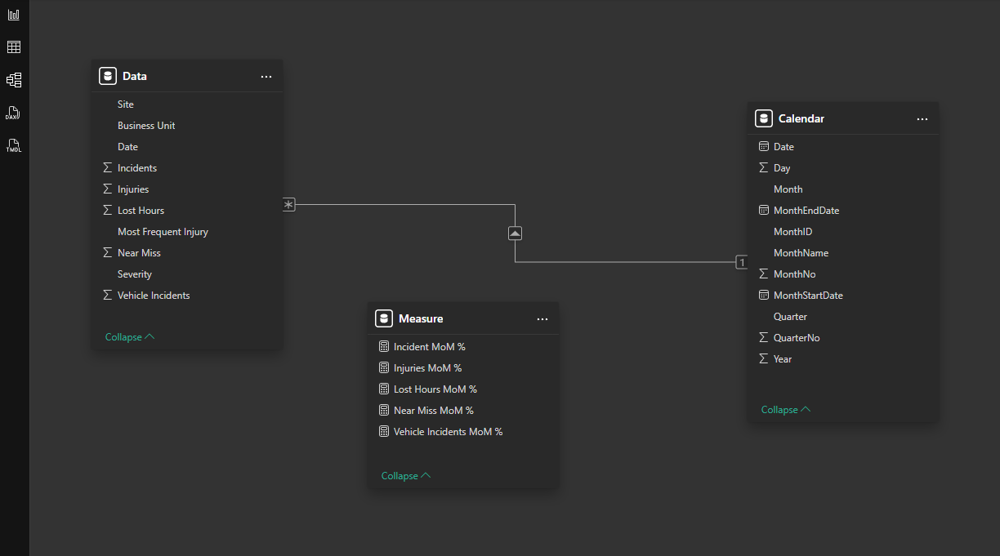
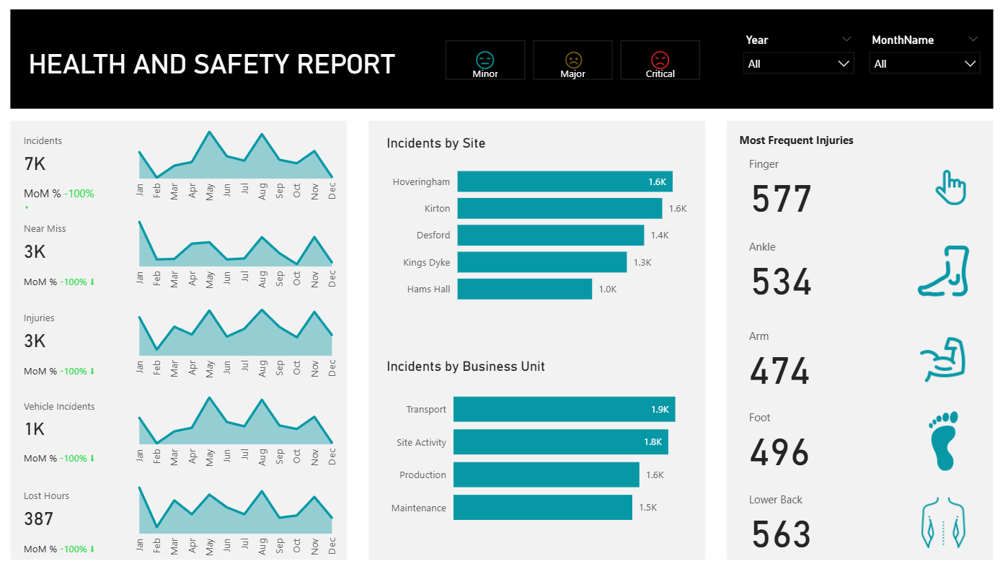
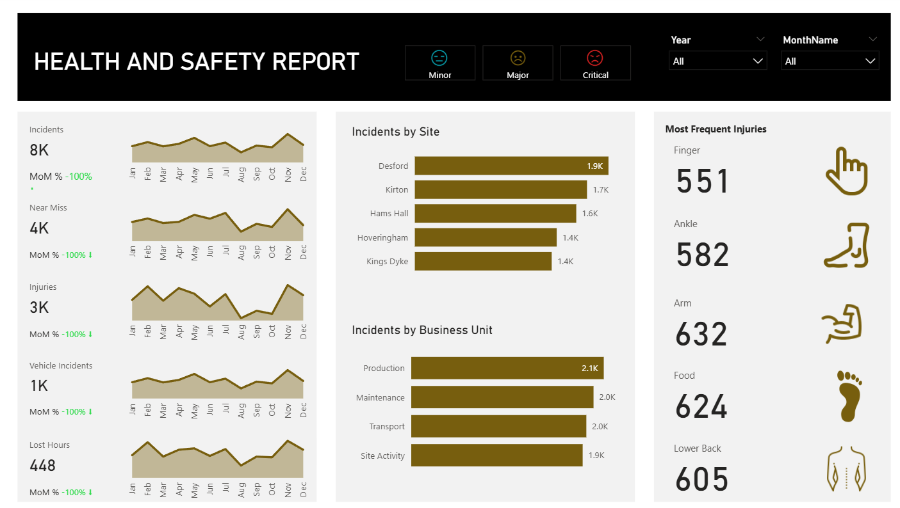
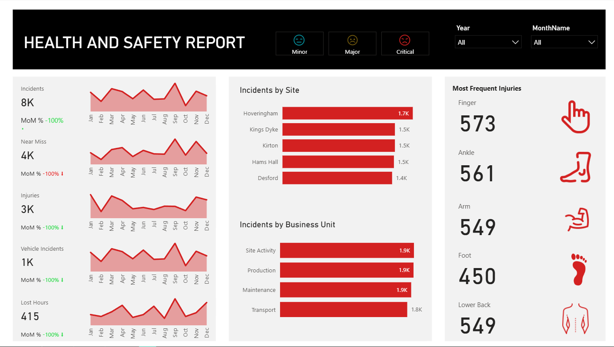

HSE Safety Analytics
Project Type:Data Analytics / Dashboard
Tools Used:PowerBI, Excel
Client:Oil & Gas Company
Overview: The HSE Monitor Dashboard is a comprehensive analytics solution designed to visualize workplace incidents, injuries, near misses, and vehicle incidents across multiple sites and business units. The dashboard enables organizations to monitor safety trends, understand severity levels, and make data-driven decisions to improve workplace safety.
Features & Functionality:
- Severity-Based Pages: Three separate pages for Minor, Major, and Critical incidents.
- Interactive Filters: Users can select a specific year and month to view relevant data, helping focus on time-specific insights.
- Key Metrics & KPIs: Displays total incidents, near misses, injuries, vehicle incidents, lost hours, and month-over-month percentage changes.
- Detailed Breakdown: Includes incidents by site and business unit, and injuries by type (finger, ankle, arm, foot, lower back, etc.) to identify high-risk areas.
- Yearly Trend Analysis: A line graph displays total incidents, injuries, near misses, vehicle incidents, and lost hours across months for the whole year, providing a clear view of long-term trends.
Data Summary
Data was sourced from organizational Health, Safety & Environment (HSE) records and includes:
- Incidents: Count of reported workplace incidents
- Near Misses: Events with potential to cause harm but did not
- Lost Hours: Total hours lost due to injuries
- Injuries: Recorded injuries by type (finger, ankle, arm, foot, lower back, etc.)
- Vehicle Incidents: Safety-related vehicle events
- Site & Business Unit: Location and organizational unit of each record
- Severity: Categorized as Minor, Major, or Critical
The dataset covers multiple sites and business units, with data collected monthly and available for year-over-year comparison.

Analytical Approach
The dashboard design followed a structured approach:
- Data preprocessing in Excel/CSV for consistency
- Loading and transforming data in PowerBI
- Building interactive dashboards with filters for year and month
- Visualizing incidents, injuries, near misses, and lost hours across sites and severity levels
- Incorporating yearly trend analysis with line charts unaffected by monthly filters

Key Findings
- Severity-based insights: Major incidents were high in numbers and lost hours.
- Site variation: Certain sites consistently reported more incidents, indicating hotspots for intervention.
- Injury types: Lower back and finger injuries were among the most frequent across business units.
- Yearly patterns: In the year 2023 the all the incidents have gone up towards the end of the year compared to other years.



Business Recommendations
- Focus training and safety interventions at sites with consistently high incident rates.
- Address recurring injury types (e.g., lower back, finger) with targeted safety programs.
- Implement monthly safety reviews to act on early warning signs of rising incidents.
- Leverage historical trend analysis to plan proactive resource allocation for high-risk months.
Assumptions & Limitations
- Data quality depends on accurate and timely incident reporting.
- External factors (e.g., weather, workload changes) were not included in analysis.
- Yearly trend analysis assumes consistency in reporting practices across months.
- Filters allow single month-year selection; comparisons outside this scope require separate exports.